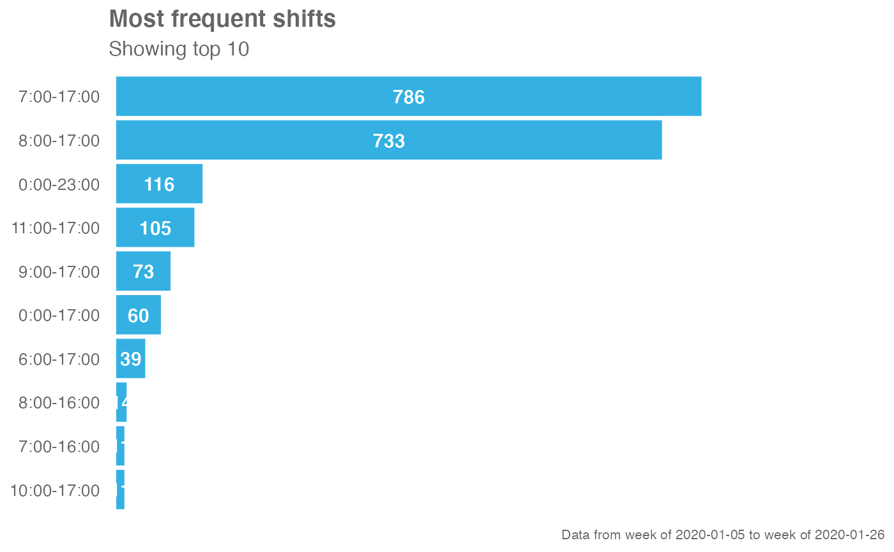
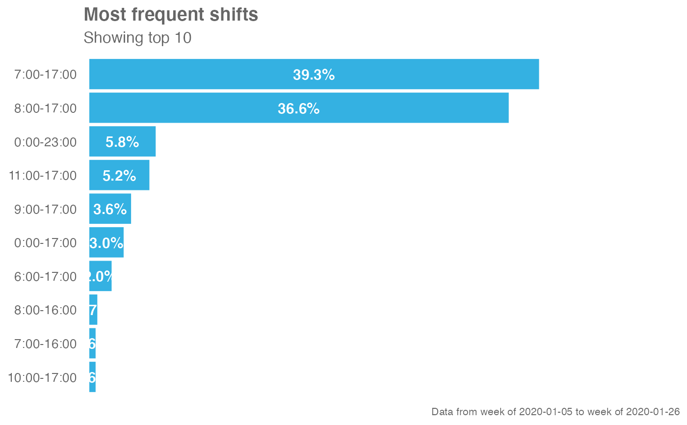

This function uses the Hourly Collaboration query and computes binary
activity to identify the 'behavioural' work shift. This is a distinct method
to identify_shifts(), which instead uses outlook calendar settings for
start and end time of work day to identify work shifts. The two methods can
be compared to gauge the accuracy of existing Outlook settings.
identify_shifts_wp(
data,
signals = c("email", "IM"),
active_threshold = 1,
start_hour = 9,
end_hour = 17,
percent = FALSE,
n = 10,
return = "plot"
)A data frame containing data from the Hourly Collaboration query.
Character vector to specify which collaboration metrics to use:
a combination of signals, such as c("email", "IM") (default)
"email" for emails only
"IM" for Teams messages only
"unscheduled_calls" for Unscheduled Calls only
"meetings" for Meetings only
A numeric value specifying the minimum number of signals to be greater than in order to qualify as active. Defaults to 0.
A character vector specifying starting hours, e.g.
"0900". Note that this currently only supports hourly increments. If
the official hours specifying checking in and 9 AM and checking out at 5
PM, then "0900" should be supplied here.
A character vector specifying starting hours, e.g. "1700".
Note that this currently only supports hourly increments. If the
official hours specifying checking in and 9 AM and checking out at 5 PM,
then "1700" should be supplied here.
Logical value to determine whether to show labels as
percentage signs. Defaults to FALSE.
Numeric value specifying number of shifts to show. Defaults to 10.
This parameter is only used when return is set to "plot",
String specifying what to return. This must be one of the following strings:
"plot"
"table"
"data"
See Value for more information.
A different output is returned depending on the value passed to the returnargument:
"plot": ggplot object. A bar plot for the weekly count of shifts.
"table": data frame. A summary table for the count of shifts.
"data: data frame. Input data appended with the following columns:
Start
End
DaySpan
Shifts
Other Data Validation:
check_query(),
extract_hr(),
flag_ch_ratio(),
flag_em_ratio(),
flag_extreme(),
flag_outlooktime(),
hr_trend(),
hrvar_count_all(),
hrvar_count(),
hrvar_trend(),
identify_churn(),
identify_holidayweeks(),
identify_inactiveweeks(),
identify_nkw(),
identify_outlier(),
identify_privacythreshold(),
identify_query(),
identify_shifts(),
identify_tenure(),
remove_outliers(),
standardise_pq(),
subject_validate_report(),
subject_validate(),
track_HR_change(),
validation_report()
Other Working Patterns:
flex_index(),
identify_shifts(),
plot_flex_index(),
workpatterns_area(),
workpatterns_classify_bw(),
workpatterns_classify_pav(),
workpatterns_classify(),
workpatterns_hclust(),
workpatterns_rank(),
workpatterns_report()
# Return plot
em_data %>% identify_shifts_wp()

# Return plot - showing percentages
em_data %>% identify_shifts_wp(percent = TRUE)

# Return table
em_data %>% identify_shifts_wp(return = "table")
#> # A tibble: 26 × 6
#> Shifts DaySpan WeekCount PersonCount `Week%` `Person%`
#> <chr> <dbl> <int> <int> <dbl> <dbl>
#> 1 7:00-17:00 10 786 340 0.393 0.309
#> 2 8:00-17:00 9 733 380 0.366 0.345
#> 3 0:00-23:00 23 116 91 0.058 0.0827
#> 4 11:00-17:00 6 105 67 0.0525 0.0609
#> 5 9:00-17:00 8 73 52 0.0365 0.0473
#> 6 0:00-17:00 17 60 54 0.03 0.0491
#> 7 6:00-17:00 11 39 28 0.0195 0.0255
#> 8 8:00-16:00 8 14 14 0.007 0.0127
#> 9 10:00-17:00 7 11 11 0.0055 0.01
#> 10 7:00-16:00 9 11 11 0.0055 0.01
#> # … with 16 more rows